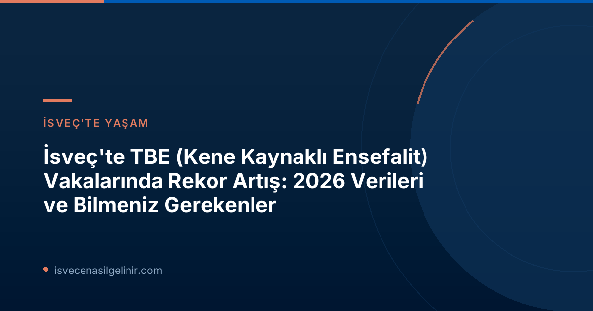

İsveç'te Kene Kaynaklı Ensefalit (TBE) Vakaları Neden Artıyor?
İsveç'te TBE vakalarındaki artışın ana nedenlerinden biri iklim değişikliği olarak gösteriliyor. İsveç Halk Sağlığı Kurumu (Folkhälsomyndigheten) verilerine göre, daha sıcak ve erken gelen baharlar, kenelerin ve virüsü taşıyan kemirgen popülasyonlarının çoğalması için uygun bir ortam sağlıyor. Ayrıca, güzel havaların etkisiyle insanların açık havada daha fazla vakit geçirmesi de kene ısırığı riskini artırıyor.
Uzman Görüşü: Ulrika Marking'den Önemli Açıklama
Folkhälsomyndigheten Enfeksiyon Hastalıkları Doktoru Ulrika Marking, konuya ilişkin yaptığı açıklamada, "İklim, keneler ve virüsü taşıyan kemirgen popülasyonu için elverişli oldu" ifadelerini kullandı. Bu durum, virüsün yayılım alanını genişletirken, insan sağlığı için de ciddi bir tehdit oluşturmaktadır.
2026 Yılı TBE Vaka Sayıları: Endişe Verici Bir Tablo
2026 yılı, İsveç için TBE vakaları açısından rekor bir yıl olarak kayıtlara geçiyor. 20 Temmuz itibarıyla bildirilen 213 vaka, önceki yılların aynı dönemine kıyasla önemli bir artışı temsil ediyor.
| Yıl | 20 Temmuz İtibarıyla Vaka Sayısı |
|---|---|
| 2026 | 213 |
| 2025 | 138 |
| 2024 | 111 |
Son On Yılda Yıllık %6 Oranında Artış
Son on yıllık döneme bakıldığında, İsveç'teki TBE vaka sayılarında ortalama yıllık yüzde altı oranında bir artış gözlemleniyor. Bu sürekli artış, hastalığın ülkedeki yayılımının altını çiziyor.
| Yıl | Toplam TBE Vaka Sayısı |
|---|---|
| 2025 | 503 |
| 2024 | 384 |
| 2023 | 595 |
| 2022 | 465 |
| 2021 | 534 |
| 2020 | 274 |
| 2019 | 358 |
| 2018 | 385 |
| 2017 | 391 |
| 2016 | 238 |
TBE Nedir ve Belirtileri Nelerdir?
TBE (Tick-borne encephalitis), kene ısırmasıyla bulaşan bir virüsün neden olduğu ciddi bir enfeksiyon hastalığıdır. Virüs, merkezi sinir sistemini etkileyerek ensefalit (beyin iltihabı) veya menenjit (beyin zarı iltihabı) gibi durumlara yol açabilir. Çoğu kişide hafif semptomlar görülse de, bazı durumlarda ciddi nörolojik komplikasyonlar ortaya çıkabilir.
Ciddi TBE Vakalarının Olası Sonuçları:
- Kişilik değişiklikleri
- Motor fonksiyon kaybı (yürüme güçlüğü, vücudun bir kısmını kullanamama)
- Bilinç kaybı
- En kötü senaryoda ölüm
TBE'den Korunma Yolları ve Aşılama: İsveç'teki Durum
TBE'den korunmanın en etkili yolu aşılamadır. Ancak İsveç Halk Sağlığı Kurumu, yetişkinlere yönelik aşılamalar hakkında ulusal düzeyde istatistik tutmuyor. Kurum, kapsamlı bir ulusal aşı kaydının oluşturulmasını desteklemektedir, zira bu, aşı tavsiyelerinin takibini ve aşı etkinliğinin izlenmesini kolaylaştıracaktır.
Bölgelere Göre Aşı Sübvansiyonları
TBE riskinin yüksek olduğu bölgelerde, yerel yönetimler aşılamayı teşvik etmek için çeşitli önlemler almaktadır:
Ücretsiz TBE Aşısı Sunan Bölgeler (3-18 Yaş Arası Çocuklar İçin):
- Sörmland
- Uppsala
- Västmanland
- Östergötland
Yetişkinler için aşılama, yaş ve sağlık durumu gibi faktörlere bağlı olarak bölgesel tavsiyelere göre şekillenir ve bölgeler kendi uygulama yöntemlerini belirler. İsveç'teki yasal süreçler ve genel bilgiler için İsveç Vatandaşlık Sınavı sayfamızı inceleyebilirsiniz.
Kene Isırıklarından Korunma İpuçları
Aşılama kadar önemli olan diğer bir korunma yöntemi de kene ısırıklarını önlemektir. İşte dikkat etmeniz gerekenler:
- Riskli alanlarda (uzun otlar, çalılıklar, ormanlık alanlar) bulunurken uzun kollu giysiler ve uzun paçalı pantolonlar giyin.
- Açık renkli kıyafetler tercih edin, böylece keneleri daha kolay fark edebilirsiniz.
- Kene kovucu spreyler kullanın.
- Açık hava etkinliklerinden sonra vücudunuzu ve çocuklarınızın vücudunu (özellikle koltuk altı, kasık, diz arkası, saç dipleri gibi yerleri) keneler açısından detaylıca kontrol edin.
- Vücudunuza yapışmış bir kene fark ederseniz, bir cımbız veya özel kene çıkarma aletiyle kenenin deriye en yakın kısmından tutarak yavaşça ve dik bir şekilde çekerek çıkarın. Keneyi sıkmaktan veya döndürmekten kaçının.
Referanslar
- SVT Nyheter Inrikes: TBE-fallen skjuter i hojden – sa manga ar smittade hittills
- Folkhälsomyndigheten (İsveç Halk Sağlığı Kurumu)
- İsveç Vatandaşlık Sınavı: sverigemedborgarskapsprov.com
İsveç Göçmenlik ve Vatandaşlık Süreçleri Hakkında Daha Fazla Bilgi Edinin
İsveç'te yaşam ve yasal süreçlerle ilgili aklınızdaki tüm soruları yanıtlamak için buradayız. En güncel bilgilere ulaşmak ve uzman desteği almak için bizimle iletişime geçin.